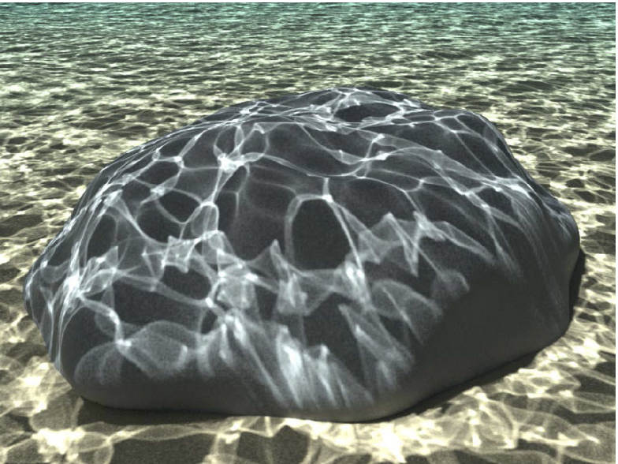
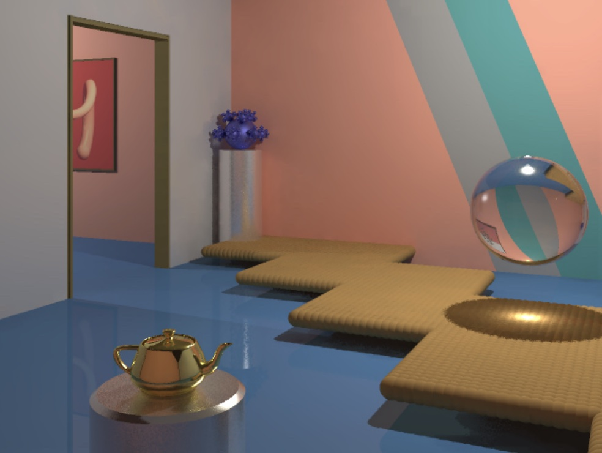

This proposal can be found at https://akshitdewan.github.io/cs184-final-project/proposal.html
Ray Tracing and Beyond
Our goal in this project is to design and implement a faster, more efficient, and more feature-loaded ray
tracer
than the one implemented as part of project 3.
Project Description
Ray tracing is a powerful technique to render various scenes, but it can also be slow and inefficient,
especially when sending out many rays into the scene to render. To address these issues, we plan to add
optimizations and features inspired by Hyperion, a renderer by Disney. The challenges in this project
involve
figuring out how to efficiently optimize our ray tracer, adding new techniques, and exploring how to best
demonstrate our ray tracer's ability to render complex scenes.
We plan to deliver
Main questions: What technique(s) best work for what scenes (e.g. different lighting)? What are the
performance
improvements resulting from each optimization technique?
-
Implementation of the cache points optimization. Based on the Hyperion paper, cache points is an
optimization technique for ray tracer to render complex scenes with lots of light by first randomly
generating cache points based on a distribution, updating the cache points in iterations, and sampling a
light from a cache point.
- Show and compare the speedup and performance of using cache points to render a scene with lots
of
lights vs using a simple ray tracer.
-
Implementation of photon mapping as a novel technique in addition to standard ray tracing. Photon
mapping involves sending photons from a light source into the scene and storing their intersections and
incident directions in a photon map.
-
Show and compare the performance of using photon mapping to render scenes vs using a simple ray
tracer.
-
Show and compare image quality (noise and variance) using photon mapping to render scenes vs no
photon mapping.
-
Able to render scenes like the following:


-
Some example metrics of interest: time to render, number of intersection tests,
iterations
till convergence, ability to render advanced lighting effects (e.g. caustics)
We hope to deliver
- Optimizations to photon mapping. Photon mapping can be improved with shadow photons. When a
photon
intersects an
object in a scene, a shadow photon in the direction of the light source can also be generated and its
intersection with any object is stored in the photon map. Upon calculating direct illumination with
raytracing,
if a photon has a direct path to a light, additional intersections can be ignored.
- Porting ray tracing and photon mapping to GPU. Raytracing and photon mapping involve generating
parallel rays or
photons in batches, a process that benefits greatly from increased parallelism using GPUs.
Schedule
| Week |
Plan |
| Week 1 (4/3) |
- Decide which ray tracer to add these optimizations and features to
- Find example scenes to render and port them to .dae
|
| Week 2 (4/10) and week 3 (4/17)
|
- Implement cache points optimization and render a scene with many many lights using the
class
ray
tracer vs the optimized one
- Implement photon mapping with caustics and render an ocean scene
|
| Week 4 (4/24)
|
- Work on extensions (porting to GPU, photon mapping optimization)
|
| Week 5 (5/1)
|
- Gather results and make presentation
|
Resources
- "The Design and Evolution of Disney's Hyperion Renderer":
https://media.disneyanimation.com/uploads/production/publication_asset/177/asset/a.pdf
- Potential Blender files to use and/or reference for scenes for rendering:
https://www.blender.org/download/demo-files/
-
Computing resources: CPU (C++), potentially GPU (CUDA)
- Potentially referencing project 3 as a starting point for the raytracer, OR implementing a simple one
from
scratch
-
Henrik Wann Jensen. 1996. Global illumination using photon maps.
http://graphics.ucsd.edu/~henrik/papers/photon_map/global_illumination_using_photon_maps_egwr96.pdf